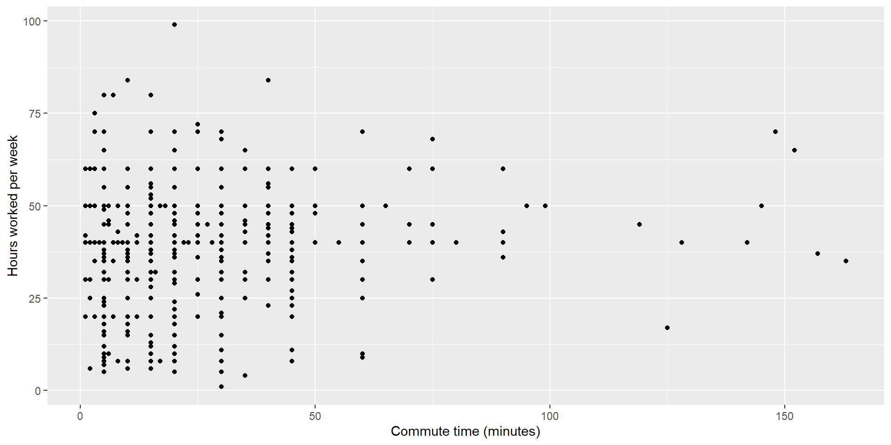

Rows: 13,583
Columns: 13
$ age <int> 14, 14, 15, 15, 15, 15, 15, 14, 15, 15, 15, 1…
$ gender <chr> "female", "female", "female", "female", "fema…
$ grade <chr> "9", "9", "9", "9", "9", "9", "9", "9", "9", …
$ hispanic <chr> "not", "not", "hispanic", "not", "not", "not"…
$ race <chr> "Black or African American", "Black or Africa…
$ height <dbl> NA, NA, 1.73, 1.60, 1.50, 1.57, 1.65, 1.88, 1…
$ weight <dbl> NA, NA, 84.37, 55.79, 46.72, 67.13, 131.54, 7…
$ helmet_12m <chr> "never", "never", "never", "never", "did not …
$ text_while_driving_30d <chr> "0", NA, "30", "0", "did not drive", "did not…
$ physically_active_7d <int> 4, 2, 7, 0, 2, 1, 4, 4, 5, 0, 0, 0, 4, 7, 7, …
$ hours_tv_per_school_day <chr> "5+", "5+", "5+", "2", "3", "5+", "5+", "5+",…
$ strength_training_7d <int> 0, 0, 0, 0, 1, 0, 2, 0, 3, 0, 3, 0, 0, 7, 7, …
$ school_night_hours_sleep <chr> "8", "6", "<5", "6", "9", "8", "9", "6", "<5"…Plotting relationships between variables
Lecture 12
2024-06-05
Logistics
- Project component 2, descriptive statistics, due tomorrow 11:59pm
- I recommend trying all parts today and coming tomorrow with questions
- Tomorrow we will start on hypothesis testing
Today
- Single variable plots
- Factors
- Multivariate plots
Single variable plots: review
- Let’s look at this Youth Risk Behavior Surveillance System data again.
Single variable plots
- How often did respondents say they wore their bike helmets in the past twelve months?
always did not ride most of time never rarely sometimes
399 4549 293 6977 713 341 
Factors
Factors
- Remember our bar plot of helmet wearing habits from the exercise:

Factors
- Categorical variables (those where the values are words/letters/numbers in quotation marks) default to being ordered alphabetically
Rows: 13,583
Columns: 13
$ age <int> 14, 14, 15, 15, 15, 15, 15, 14, 15, 15, 15, 1…
$ gender <chr> "female", "female", "female", "female", "fema…
$ grade <chr> "9", "9", "9", "9", "9", "9", "9", "9", "9", …
$ hispanic <chr> "not", "not", "hispanic", "not", "not", "not"…
$ race <chr> "Black or African American", "Black or Africa…
$ height <dbl> NA, NA, 1.73, 1.60, 1.50, 1.57, 1.65, 1.88, 1…
$ weight <dbl> NA, NA, 84.37, 55.79, 46.72, 67.13, 131.54, 7…
$ helmet_12m <chr> "never", "never", "never", "never", "did not …
$ text_while_driving_30d <chr> "0", NA, "30", "0", "did not drive", "did not…
$ physically_active_7d <int> 4, 2, 7, 0, 2, 1, 4, 4, 5, 0, 0, 0, 4, 7, 7, …
$ hours_tv_per_school_day <chr> "5+", "5+", "5+", "2", "3", "5+", "5+", "5+",…
$ strength_training_7d <int> 0, 0, 0, 0, 1, 0, 2, 0, 3, 0, 3, 0, 0, 7, 7, …
$ school_night_hours_sleep <chr> "8", "6", "<5", "6", "9", "8", "9", "6", "<5"…Factors
- But we can change that!
- Factors are a specific type of R object. They are categorical with response options that are represented by words/letters/numbers in quotation marks, but they allow you to assign those options any order you’d like.
- Useful for ordinal variables
- To change the order of the bars, we change the order of the response options in the data set before we plot.
Factors
- We can use
mutate()with a new function,factor(), for this.
always did not ride most of time never rarely sometimes
399 4549 293 6977 713 341
<NA>
311 yrbss_reordered <- mutate(yrbss,
# we are turning our helmet variable into a factor
# its name will remain the same (the new variable
# we create will overwrite the old one)
helmet_12m = factor(
helmet_12m,
# and we want its response options to be in this order
# least to greatest frequency
levels = c("did not ride", "never", "rarely",
"sometimes", "most of time", "always")))
table(yrbss_reordered$helmet_12m)
did not ride never rarely sometimes most of time always
4549 6977 713 341 293 399 Factors
- Our new plot! I’ve added better labels as well.
- What is easier to see in this plot than the old one?
- Does the pattern surprise you?
Multivariate plots
Plots for relationships between variables
- Plots are an excellent tool for looking at the relationships between variables.
- The same structure applies for plotting two/three/four/etc variables as one variable.
- What’s different? Some new function options, some new geoms.
Types of plots for different combinations of variables: overview
One numeric variable
- Histogram,
geom_histogram()
- Histogram,
One categorical variable
- Bar chart,
geom_bar()
- Bar chart,
Two numeric variables
- Scatterplots,
geom_point()
- Scatterplots,
One numeric and one categorical variable
- Boxplots,
geom_boxplot()
- Boxplots,
Two categorical variables
- Bar chart with color or facets
What about three or more variables?
- Start with your main explanatory variable and main response variable and make a two variable plot
Adding an additional categorical variable
- Can you add color (one per category)?
- Can you break a big plot into several small plots (facets)?
Adding an additional numeric variable
- Can you add color (along a gradient)?
- Can you add size?
Adding variables in ggplot
aes()(aesthetics) is where we tell R what variables we want represented by what plot elementsFor example:
ggplot(acs12, aes(x = income))ggplot(acs12, aes(x = income, y = married))ggplot(acs12, aes(x = income, y = married, color = gender))ggplot(acs12, aes(x = time_to_work, y = lang, size = income))ggplot(acs12, aes(x = time_to_work, y = lang, color = income))
Bar charts for two categorical variables
RQ: How do reported rates of texting while driving vary by gender? (in
yrbss)We can use color!
color(for lines and points) andfill(for filling in areas like bars) are the arguments we use insideaes()to add color.
Rows: 13,583
Columns: 13
$ age <int> 14, 14, 15, 15, 15, 15, 15, 14, 15, 15, 15, 1…
$ gender <chr> "female", "female", "female", "female", "fema…
$ grade <chr> "9", "9", "9", "9", "9", "9", "9", "9", "9", …
$ hispanic <chr> "not", "not", "hispanic", "not", "not", "not"…
$ race <chr> "Black or African American", "Black or Africa…
$ height <dbl> NA, NA, 1.73, 1.60, 1.50, 1.57, 1.65, 1.88, 1…
$ weight <dbl> NA, NA, 84.37, 55.79, 46.72, 67.13, 131.54, 7…
$ helmet_12m <chr> "never", "never", "never", "never", "did not …
$ text_while_driving_30d <chr> "0", NA, "30", "0", "did not drive", "did not…
$ physically_active_7d <int> 4, 2, 7, 0, 2, 1, 4, 4, 5, 0, 0, 0, 4, 7, 7, …
$ hours_tv_per_school_day <chr> "5+", "5+", "5+", "2", "3", "5+", "5+", "5+",…
$ strength_training_7d <int> 0, 0, 0, 0, 1, 0, 2, 0, 3, 0, 3, 0, 0, 7, 7, …
$ school_night_hours_sleep <chr> "8", "6", "<5", "6", "9", "8", "9", "6", "<5"…Bar charts for two categorical variables
fill = genderis the argument we want for bar color (an area rather than a point or line)- This is an okay start, but it’s not super obvious yet what the story is
yrbss |>
filter(!is.na(gender) & !is.na(text_while_driving_30d)) |> # remove missing data
mutate(text_while_driving_30d = factor(text_while_driving_30d, # change the order of the bars
levels = c("did not drive", "0", "1-2", "3-5",
"6-9", "10-19", "20-29", "30"))) |>
# we add the fill argument here with the variable we want the fill color to represent.
ggplot(aes(x = text_while_driving_30d, fill = gender)) +
geom_bar()Bar charts for two categorical variables
- We can set the bars to be next to one another rather than stacked with the
position = "dodge"argument togeom_bar()
yrbss |>
filter(!is.na(gender) & !is.na(text_while_driving_30d)) |>
mutate(text_while_driving_30d = factor(text_while_driving_30d,
levels = c("did not drive", "0", "1-2", "3-5",
"6-9", "10-19", "20-29", "30"))) |>
ggplot(aes(x = text_while_driving_30d, fill = gender)) +
geom_bar(position = "dodge") +
labs(x = "Number of days last month respondent texted while driving",
y = "",
# I can change the label on other aes features just like on axes--this goes above the legend
fill = "Sex")Bar charts for two categorical variables
- Here the story is clearer!
New plots for two variables: scatter plots and boxplots
- Scatter plots show the relationship between two numeric variables
- Explanatory (independent) variable on the x axis, response (dependent) variable on the y axis
Scatter plot
Scatter plot with color
- What if we wanted to add a third variable? How about gender?
- One option is to use color
Scatter plot with color
Box plots
- Box plots are good for showing the median, quartiles, outliers, and range of a variable.
- You can plot a single numeric variable using a boxplot, but they’re most useful for comparing the distribution of a numeric variable across different groups represented by a categorical variable.

Box plots and distributions: exercise

Box plots
- Example: How does the number of hours worked per week vary by education level?
Three variables: Adding color to our boxplot
- RQ: Among people who report being employed, how does the relationship between education level and number of hours worked per week vary by ability status?
My expectations for your plots
Make plots that are interpretable
- Choose plot types that are appropriate to your variables
- Use useful labels
Do they have to be pretty?
- No. Ugly but interpretable is fine.
- BUT, R is really good at making beautiful graphics–and if you’d like to learn more about how to do that, I’m happy to help!
Additional resources for plotting
Check out the R Graph Gallery
- This walks through different kinds of plots and their strengths and weaknesses. It includes lots of example code.
- There are lots of resources here for making plots both more interpretable and more beautiful!
If this interests you, I recommend:
Soc 232: Visualizing Social Data, taught by Dr. Kieran Healy
- or, Dr. Healy’s book, Data Visualization: A Practical Introduction
Stat 313: Advanced Data Visualization, taught by Dr. Mine Çetinkaya-Rundel
Soc 223: Data Analytics and Visualization for Business, taught by Dr. Stephen Vaisey
Steps to make a plot for your project
Step 1: Identify the variables you want to plot and figure out if they’re numeric or categorical
- Watch out for variables that are theoretically numeric but treated in R as categorical (like the texting while driving variable above)
Step 2: Choose a plot type that fits your variables and question
- Sketch it out! Figure out what it should look like in your head before you jump into R.
- What should each axis represent? Do you need color or something else in order to include all your variables?
Step 3: Look for resources. Find the relevant code in the slides and read the R Graph Gallery’s information about your plot type.
Step 4: Make the super simple version
Step 5: Refine it to make it more interpretable
- My expectation: add labels and drop NA values if necessary
For tomorrow
- No exercise on multivariate plots
- Try out part 4 of your project instead! Come tomorrow with questions.